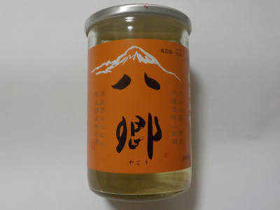

久米桜酒造の八郷はお土産におすすめ。
2021/07/16

八郷 純米酒70です。精米歩合707%で、米をあまり削らないで素材の味を引き出したお酒らしいです。
日本酒はお米を沢山削って作るのでもったいないなーと思っていました。削らないと複雑な味になるんですね。
削って作る理由がよくわかりました。
でも削らなかったからって悪くないです。これはこれで美味しい。
まったりとしていて味わい深いです。特徴があるものなので、お土産に丁度良さそうです。
鳥取県西伯郡伯耆町丸山1740-50
2021/07/16

八郷 純米酒70です。精米歩合707%で、米をあまり削らないで素材の味を引き出したお酒らしいです。
日本酒はお米を沢山削って作るのでもったいないなーと思っていました。削らないと複雑な味になるんですね。
削って作る理由がよくわかりました。
でも削らなかったからって悪くないです。これはこれで美味しい。
まったりとしていて味わい深いです。特徴があるものなので、お土産に丁度良さそうです。